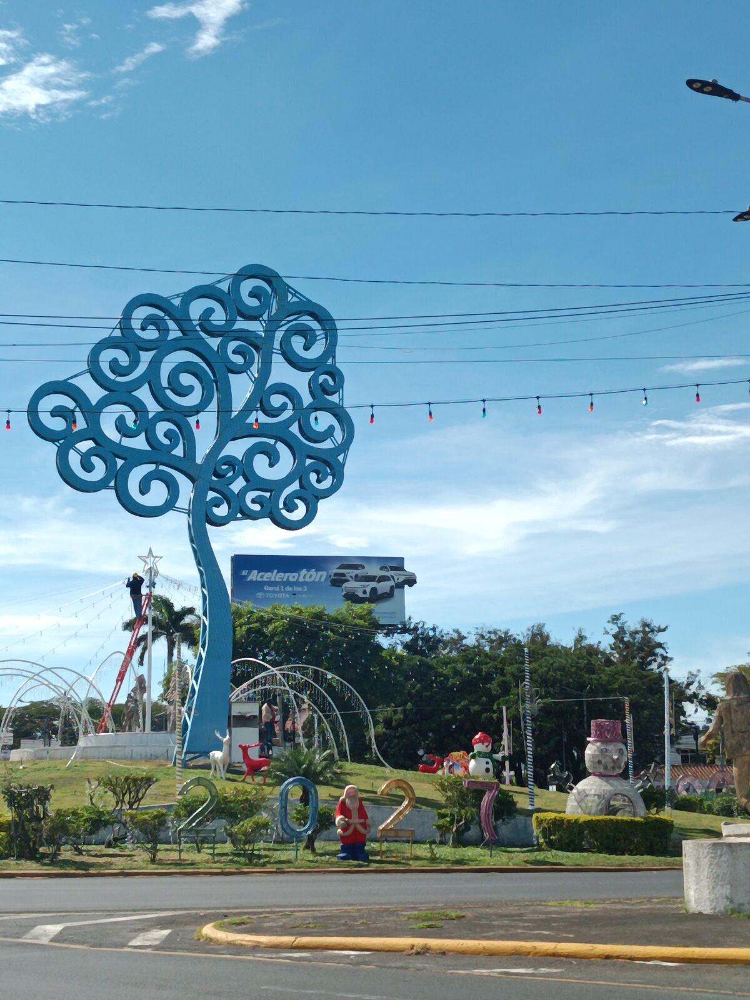
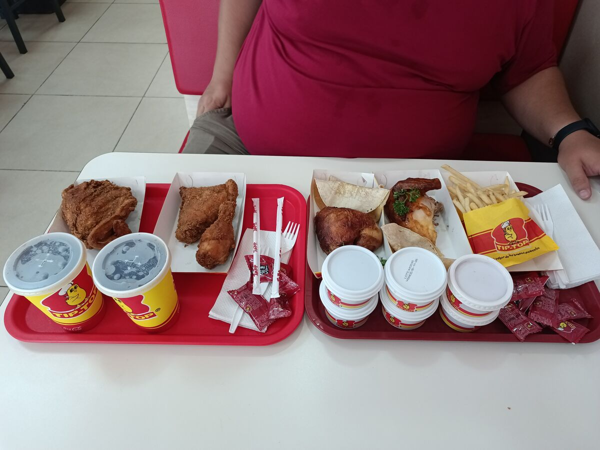
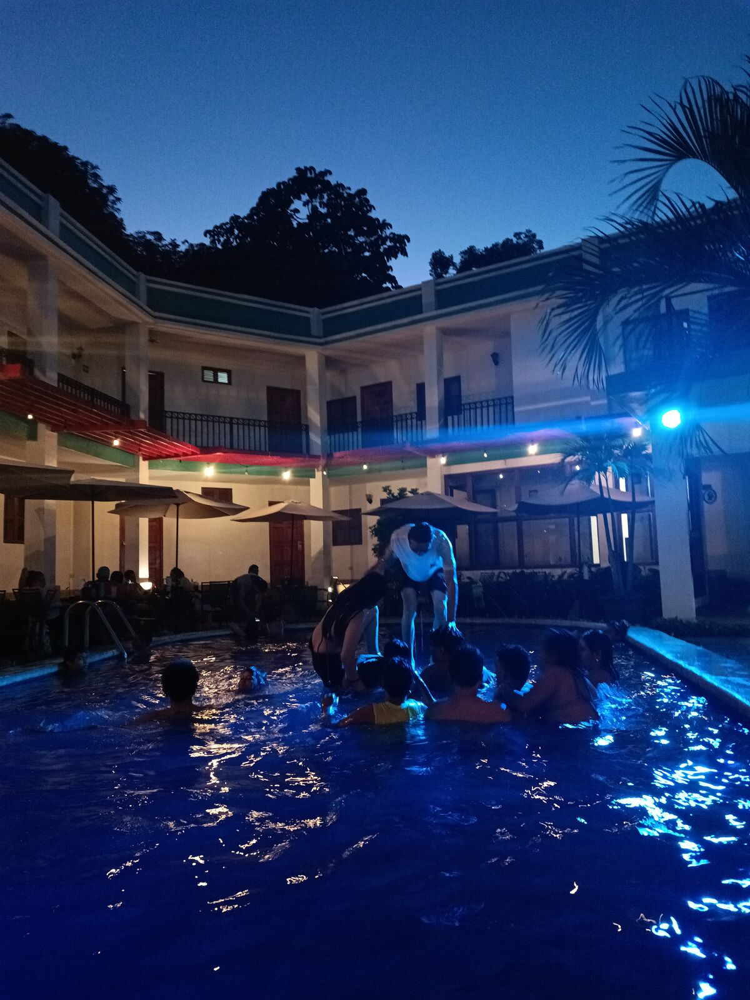

Nie derselbe Fluss
Gestern war in Guatemala der Tag der Toten, und José meinte, das sei ein sehr lateinamerikanisches Datum, denn sogar in Nicaragua war Feiertag. Da wurde mir klar, welches Glück wir hatten, am Sonntag noch etwas Geöffnetes zu finden, denn am Montag hätten wir natürlich nichts gefunden: Der Feiertag wurde auf Montag verschoben.
Am Ende von Tag 8 schaute ich in die sozialen Netzwerke: Viele besuchten ihre Verstorbenen auf dem Friedhof. Ich sah auch etwas, das mich immer nachdenklich macht: wie wir kulturelle Ausdrucksformen anderer Völker übernehmen, als hätten wir sie schon immer gehabt. Ich glaube, das hat mit Identität zu tun, mit dem Alter und mit jener Phase in der Jugend, in der wir unsere Wurzeln ablehnen, weil sie altmodisch wirken oder nicht beliebt sind, und stattdessen ferne Bräuche annehmen.
Ich sah Guatemalteken mit mexikanischen Altären oder beim Halloween-Feiern. Jeder hat das Recht zu tun, was er will, aber ich wünschte, wir kennten den Hintergrund dieser Bräuche, die nicht dafür gemacht sind, auf Fotos hübsch auszusehen, sondern um der Ahnen und Verstorbenen zu gedenken. Wir haben hier auch unsere eigenen Traditionen: auf den Friedhof gehen, Riesendrachen steigen lassen und die Gräber schmücken. Hoffentlich lassen wir sie nicht wegen des nächsten Trends links liegen.
Es war ein Tag voller Gedanken; eigentlich haben wir nichts gemacht. Tag 8 hatte uns nach so viel Stress k. o. gesetzt. Ich habe den ganzen Vormittag geschlafen, so lange, dass ich zu spät zum Frühstücksbüfett kam. José hatte schon gefrühstückt, und rein zufällig erwischte ich noch Obst und ein paar Brownies und sagte mir: Das reicht. In Nicaragua sind die Portionen groß, extrem groß, egal was, und verglichen mit Preisen und Portionen in Guatemala ist es meist günstig, sooo günstig, dass wir uns beim Umrechnen verrechnen und am Ende immer zu viel zahlen, HAHAHAHA.

Zum Mittagessen gingen wir zu Tip-Top, denn anscheinend haben wir es uns zur Aufgabe gemacht, jede Brathähnchenkette in den Ländern auszuprobieren, die wir besuchen. Bei Pollo Campestre waren wir schon, und José liebte es, weil es ihn an das Rezept von Pollo Campero aus den 80ern erinnerte; ich fand es salzig, aber nicht schlecht, wobei es auch das frisch frittierte Hähnchen um 21 Uhr war, haha.
Bei Tip-Top war unser Plan zwei Stücke pro Person: eins gegrillt und eins „rostizado“, also frittiert (warum es rostizado heißt, wenn es frittiert ist, verstehe ich nicht, aber jedem das Seine, HAHA; vielleicht bin ich derjenige, der es nicht weiß). Wir erklärten der Frau, dass wir je ein frittiertes Stück, ein gegrilltes, Pommes und Wasser wollten, und kamen mit einer Rechnung von 1.300 Córdobas raus, mehr als das Fleisch am Vortag in León. Seltsam, denn das Zwei-Stück-Menü kostete unter 400 Córdobas, aber weil wir nicht wussten, wie man bestellt, zahlten wir wieder Lehrgeld.
Am Ende bekamen wir zwei Tabletts voller Hähnchen, mit Bohnen, Pico de Gallo, Tortillas, einem Getränk und dem berühmten Krautsalat. Natürlich haben wir alles aufgegessen, aber es war hart. Wir fuhren zurück ins Hotel, ruhten uns aus und schliefen bis zum Abend, den wir etwa 3 Stunden im Pool verbrachten, hahahaha.


Man hat mir immer gesagt, ich hätte eine beeindruckende Fähigkeit zur Selbstreflexion und bemerke feine Veränderungen um mich herum. Ich habe herausgefunden, dass das eine Reaktion auf Dinge aus der Kindheit ist; nicht unbedingt Gewalt, aber Situationen, die einen prägen. Ich mochte Pools schon immer: Es ist eine der Erinnerungen an unsere Kindheit, als meine Mutter uns zum Schwimmen in den Club Aurora mitnahm, vielleicht nicht jedes Wochenende, aber ziemlich oft. Ich lasse mich meist treiben, halte die Luft an, wie ein Seestern, und während ich treibe, entspanne ich mich und komme in Kontakt mit meinem Kopf. Alles, was José und ich diese Woche gemacht haben, war ein fast chaotisches Hin und Her. Das ist nicht schlimm, wir sind hohen Stress gewohnt, aber ich hatte keine Zeit gehabt, es zu verarbeiten.
Während ich trieb und versuchte, nicht unterzugehen, erinnerte ich mich an die Fotos vom Friedhof und an meine eigenen Verstorbenen: meinen Großvater Armando, meinen Bruder Hanz, meine Großmutter Odilia. Ich habe das Glück, dass viele meiner Alten noch leben, aber ich weiß, dass es nicht für immer ist. Ich erinnerte mich, dass mein Bruder Hanz vor 10 Jahren ertrunken ist. Ich dachte an das Sprichwort, dass Angst schwer wiegt, und daran, dass wir nie in Angst aufgewachsen sind: Wir hatten vor nichts Angst, buchstäblich vor nichts.
Ich erinnere mich, wie wir einmal durch einen Naturpark in dem Ort gingen, in dem wir aufgewachsen sind, und eine Schlange auftauchte. Während alle zurückwichen, standen wir beide da und sahen ihr bewundernd zu, gebannt von ihrer Bewegung, vorsichtig, sie nicht zu stören, aber nie ängstlich. Ich tauchte den Kopf unter Wasser und versuchte mir vorzustellen, was mein Bruder gefühlt haben muss: die Angst, den Grund des Sees nicht zu sehen, nichts zum Festhalten zu haben, und, am schwersten, den Moment, in dem er vermutlich um Hilfe rief und niemand nah genug war, um sofort zu helfen.
Als mein Bruder starb, blieb etwas in mir zurück. Nach so vielen Filmen, Serien und Animes lernt man, dass es immer einen Schuldigen gibt, wenn jemand geht, und dass sich der ganze Schmerz gegen diese Person oder Struktur richtet; das begleitet einen und macht den Schmerz kleiner, weil es wenigstens jemanden gibt, dem man die Schuld geben kann. Aber wenn der Schuldige derjenige ist, der gestorben ist, was macht man dann? Das Leben hat mir auf die harte Tour beigebracht, dass es nicht immer Schuldige gibt und dass man manchmal einfach loslassen muss.
Ich dachte an meinen Großvater Armando väterlicherseits, der all das Gute und Schlechte nicht mehr erleben konnte, das ich in den Jahren ohne ihn gemacht habe; ihn in der Nähe zu haben, hätte mir sicher viel Trost gegeben, und er wäre stolz. Und an meine Großmutter Odilia, die Mutter meiner Mutter, die, obwohl wir uns in ihren letzten Jahren nicht gut verstanden, immer stolz auf ihre Enkel war.
Ich sah, wo ich stand: in Nicaragua, im selben Hotel, in dem ich 2019 wegen einer Veranstaltung war. Aber mir wurde klar, dass es nicht dasselbe war. Das Paradox des Heraklit stimmt: Man steigt nicht zweimal in denselben Fluss, denn weder der Fluss noch man selbst ist derselbe. Dieser Pool war derselbe, aber ich war es nicht, nicht die Situation, nicht das Wasser. Ich war stolz auf alles, was sich in diesen Jahren verändert hat, und beschloss, diese Reise fortzusetzen.
Wir gingen zu Abend essen und dann schlafen. Anscheinend hatte ich viel Poolwasser geschluckt, denn mein Bauch tat weh. In der Hoffnung, nicht krank aufzuwachen, legte ich mich hin und schlief tief.
👆 Tippe oder klicke auf einen Punkt der Karte, um das Kapitel dieses Tages zu lesen.